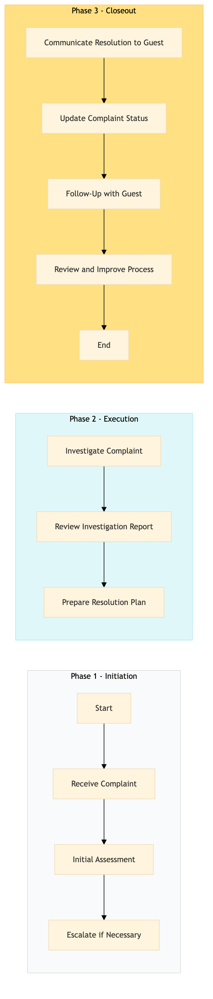

| Role | Steps |
|---|---|
| Front Desk Agent | 1.1 3.1 3.3 |
| Loyalty Program Manager | 1.2 2.2 3.4 |
| Loyalty Program Specialist | 1.3 2.1 2.3 |
| Step | Name | Role | System | Input | Output | KPI | Dec? | Exc? | Pain Point / Risk |
|---|---|---|---|---|---|---|---|---|---|
| 1.1 | Receive Complaint | Front Desk Agent | Oracle OPERA Cloud | Guest complaint via phone or in-person | Complaint logged in Oracle OPERA Cloud | < 3 min | N | Y | Handling sensitive guest complaints efficiently |
| 1.2 | Initial Assessment | Loyalty Program Manager | Oracle OPERA Cloud, Marriott Bonvoy CRM | Logged complaint in Oracle OPERA Cloud | Assessment report with priority level | < 5 min | Y | N | Accurately assessing the severity of loyalty program issues |
| 1.3 | Escalate if Necessary | Loyalty Program Manager | Oracle OPERA Cloud, Marriott Bonvoy CRM | Assessment report with priority level | Complaint escalated to higher management or specialist team | < 10 min | Y | N | Ensuring timely escalation of critical issues |
| 2.1 | Investigate Complaint | Loyalty Program Specialist | Oracle OPERA Cloud, Marriott Bonvoy CRM | Escalated complaint or initial assessment report | Detailed investigation report with findings | < 30 min | N | Y | Conducting thorough investigations under time constraints |
| 2.2 | Review Investigation Report | Loyalty Program Manager | Oracle OPERA Cloud, Marriott Bonvoy CRM | Detailed investigation report with findings | Approval or rejection of proposed resolution | < 15 min | Y | N | Balancing guest satisfaction and operational policies |
| 2.3 | Prepare Resolution Plan | Loyalty Program Specialist | Oracle OPERA Cloud, Marriott Bonvoy CRM | Approval or rejection of proposed resolution | Resolution plan with compensation details | < 20 min | N | Y | Creating fair and effective compensation plans |
| 3.1 | Communicate Resolution to Guest | Front Desk Agent | Oracle OPERA Cloud, Marriott Bonvoy CRM | Resolution plan with compensation details | Confirmation of resolution communicated to guest | < 5 min | N | Y | Handling sensitive communications effectively |
| 3.2 | Update Complaint Status | Loyalty Program Specialist | Oracle OPERA Cloud, Marriott Bonvoy CRM | Confirmation of resolution communicated to guest | Complaint status updated in Oracle OPERA Cloud | < 5 min | N | N | Maintaining accurate records for compliance and future reference |
| 3.3 | Follow-Up with Guest | Front Desk Agent | Oracle OPERA Cloud, Marriott Bonvoy CRM | Complaint status updated in Oracle OPERA Cloud | Guest satisfaction follow-up completed | < 1 week | N | Y | Ensuring guest satisfaction and addressing any lingering concerns |
| 3.4 | Review and Improve Process | Loyalty Program Manager | Oracle OPERA Cloud, Marriott Bonvoy CRM | Guest satisfaction follow-up results | Process improvement recommendations | < 1 month | N | N | Continuous process improvement based on guest feedback |
A structured process document for resolving complaints related to Marriott Bonvoy loyalty program at a full-service Marriott hotel.